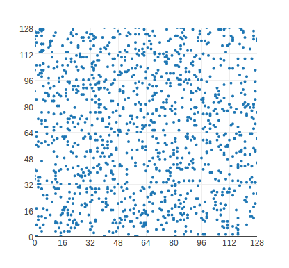

<ion-view class="moveDown">

<ion-list>

  <ion-item>
    <div class="aboutTextBlock">
      <h2>How do the fish make a random number?</h2>
      <ul>
         <li><div class="listNumber">1</div>
           Set up a camera on your fishtank</li>
         <li>This is the second item</li>
         <li>This is the third item</li>
         <li>This is the fourth item</li>
         <li>This is the fifth item</li>
         <li>This is the sixth item</li>
      </ul>
    </div>
  </ion-item>

  <ion-item>
    <!-- graph here -->
    <div class="aboutTextBlock">
      Bellow is a scatter plot graph that shows the
      distribution of randomly generated x and y values
      which are then plotted onto the graph.
    </div>

    <div id="graph">
      
    </div>

  </ion-item>

  <!-- more content explaining how our RNG works -->
</ion-list>
</ion-view>
